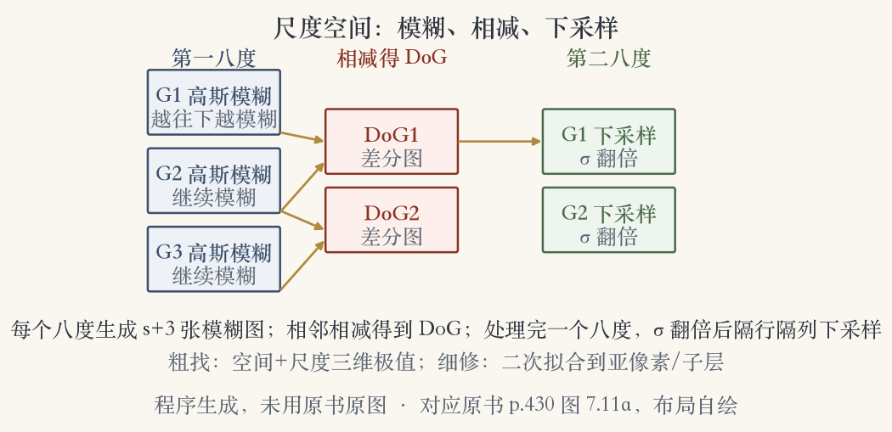
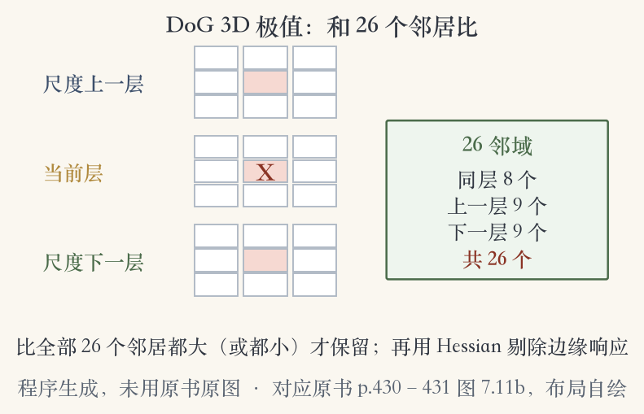
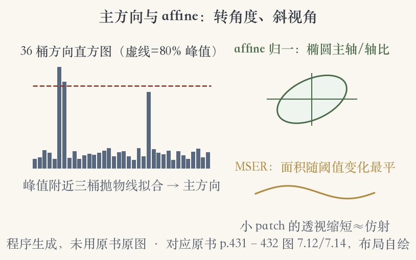

第 7 章 · 尺度空间
物体忽大忽小，特征就丢了
细尺度的特征，换个大小时可能不存在。
办法：在多种尺度上各提一遍特征。
同一层之间互相匹配，图 7.10 是五层。
适合航拍、定焦全景这类场景。
依据：原书第 429 页
多尺度方案
多种尺度提取，同层匹配
图 7.10：五层多尺度图块
代价：计算量变大
换来尺度上的可比性
正课第五十九集
01 / 16
尺度未知
让特征自带大小标签
多数识别任务里，物体尺度未知。
每层都试一遍，代价太高。
直接找位置、尺度都稳定的点。
匹配时只找两者都对得上的。
依据：原书第 429 页
更省的做法
位置稳定
尺度稳定
匹配只查同尺度
正课第五十九集
02 / 16
尺度空间 · 程序生成图
看图：模糊、相减、下采样
Lindeberg：LoG 极值定位置。
Lowe：子八度 DoG 找三维极大。
二次拟合到亚像素、子层。
子八度三层，约四分之一八度。
依据：原书第 429–430 页

尺度空间金字塔：两个八度、高斯模糊、相减得 DoG、隔行隔列下采样｜程序生成，未用教材或论文原图
正课第五十九集
03 / 16
Hessian 剔除
边缘上的点，要剔掉
曲率强烈不对称的点要剔除。
与 Harris 同理，指示函数用 DoG。
先算差分图的局部 Hessian。
迹平方比行列式过大就丢，阈值 10。
依据：原书第 429 页
Tr(H)² / Det(H) > 10
H：差分图 D 的局部 Hessian；比值过大=边缘响应
正课第五十九集
04 / 16
与自相关的关系
SIFT 与 Harris 是两条路
SIFT 与自相关类检测子根基不同。
两者的检测位置常常互补。
实际系统里可以一起用。
Harris 加 LoG：只留 LoG 极值点。
依据：原书第 429 页
互补关系
SIFT：DoG 极值
Harris：自相关矩阵
位置互补，可并用
正课第五十九集
05 / 16
DoG 与归一化
DoG 近似尺度归一化 LoG
DoG 可以很好近似 σ²∇²G。
乘 σ² 归一化，才真正尺度不变。
σ²∇²G 的极值比梯度、Hessian 稳。
不同尺度上的响应可以公平比较。
依据：原书第 430 页
DoG ≈ σ² ∇²G
Lindeberg：乘 σ² 才尺度不变；Mikolajczyk 实验：极值最稳
正课第五十九集
06 / 16
热扩散
热扩散给出 DoG 的来历
对 σ 求导，等于 σ 乘拉普拉斯。
相邻尺度 kσ 与 σ 的差分近似导数。
连续的是热扩散，离散的就是 DoG。
依据：原书第 430 页
两个视角
连续：热扩散方程
离散：相邻层相减
DoG 有微分方程依据
正课第五十九集
07 / 16
常数因子
k−1 是常数，不妨碍找极值
把上式整理，DoG 已含 σ² 归一化。
系数 k−1 在所有尺度上相同。
常数只改整体高低，不改极值位置。
k 越接近 1，近似误差越小。
依据：原书第 430 页
实践结论
尺度差大，影响也小
极值检测与定位仍稳
DoG 因此好用
正课第五十九集
08 / 16
高效构造
模糊、相减、缩小、再来
每层用高斯逐步模糊，相邻相减。
每个八度生成 s+3 张模糊图。
σ 翻倍的那张隔行隔列下采样。
进入下一八度，重复同一套操作。
依据：原书第 430 页
构造顺序
模糊 → 相减 → 下采样
一个八度接一个八度
搭出完整尺度金字塔
正课第五十九集
09 / 16
DoG 三维极值
26 个邻居，全大或全小才留
当前层 8 个邻居。
上下两层各 9 个，共 26 个。
比全部 26 个都大或都小才选。
这样在空间和尺度上都稳定。
依据：原书第 430–431 页

DoG 三维极值：当前层 8 + 上下层各 9 = 26 邻域｜程序生成，未用教材或论文原图
正课第五十九集
10 / 16
旋转
先给关键点定个正方向
旋转不变描述子判别力差。
不同图块可能映射成同一描述。
更好：每个关键点估主方向。
按尺度、方向取 patch 再描述。
依据：原书第 431 页
三步
先定尺度
再定方向
取缩放旋转后的图块
正课第五十九集
11 / 16
平均梯度
平均梯度：简单，但窗口要大
最简单的估计：区域平均梯度。
加高斯权重=一阶可转向滤波。
可用高斯水平、垂直导数来算。
聚合窗通常比检测窗更大。
依据：原书第 431 页
为什么窗口要大
窗口小，方向被噪声带偏
窗口大，方向更稳
所以用独立聚合窗
正课第五十九集
12 / 16
主方向 · 程序生成图
看图：36 桶定主方向
平均梯度太小，方向不可靠。
用 36 桶方向直方图统计。
权重：梯度幅值 + 高斯距离。
取 80% 峰值，三桶抛物线拟合。
依据：原书第 431–432 页

主方向与 affine：36 桶直方图、80% 峰值、三桶拟合；仿射椭圆与 MSER｜程序生成，未用教材或论文原图
正课第五十九集
13 / 16
affine 不变性
斜着看：小图块近似仿射
宽基线、位置识别要完整 affine。
透视缩短也是仿射形变。
足够小的图块，连续形变≈affine。
椭圆主轴、轴比当仿射坐标架。
依据：原书第 431–432 页
三道不变性
尺度：管大小
方向：管旋转
affine：管斜视角
正课第五十九集
14 / 16
MSER
MSER：面积变得最稳的区域
在所有灰度阈值上做二值化。
跟踪每个连通区域的面积变化。
变化率最小=最大稳定区域。
对仿射几何、光度变换不敏感。
依据：原书第 432 页
两个要点
稳定，才值得拿来匹配
可用矩矩阵拟合坐标架
Matas、Chum 等提出
正课第五十九集
15 / 16
现代检测子 · 移交
检测子还在变，框架没变
SURF 用积分图加速。
FAST 是早期学习型检测子。
BRISK 结合尺度空间 FAST 与二值描述。
ORB 加方向，KAZE 用非线性扩散。
依据：原书第 432–433 页
交接
综述比较经典仿射检测子
检测子的名单还在变长
下一集：128 维描述子与匹配
正课第五十九集
16 / 16